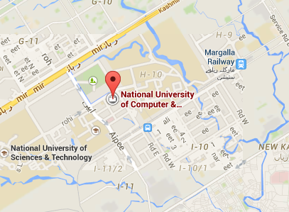
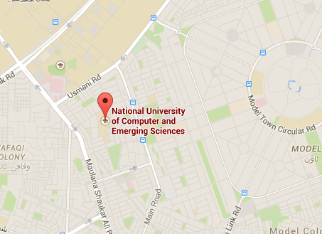
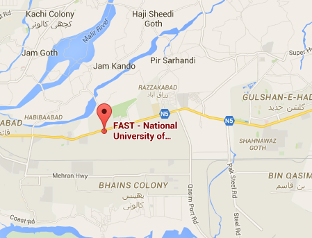

Copyright © 2000 - 2015 , NUCES. All Rights Reserved
Copyright © 2000 - 2015 , NUCES. All Rights Reserved
Islamabad
Seated along the Kashmir Highway, the Islamabad Campus holds in view the capital city, with mystic thoughtfulness.
A majestic banyan tree strikes the eye of the visitor before the overshadowed Campus’s beauty can capture his attention.
The visitor experiences an instantaneous dilemma. He does not know whether to admire the panoramic scenery of the city,
which lies before his eyes or marvel the academic décor of the Campus. Spread over a 15-acre land, right in the academic hub of the city,
Islamabad Campus is steadily expanding both in terms of its area and study programs.
The highly qualified, deeply committed, and professionally inspired faculty gives to the university an academic character.
The faculty not only excels in their teaching abilities but also keep themselves abreast of the latest trends and developments in science and technology.
They are also accomplished researchers, contributors, and developers in their respective areas of interest.
The research projects carried out at the Campus range from Bio-Informatics, Agro-Informatics, Machine Intelligence, and Neural Networks to IT consulting.
Contact Information
A.K Brohi Road
Sector H-11/4
Tel: (051) 111 128 128 or (051) 831 4100 - 03
Fax: (051) 410 3846

Copyright © 2000 - 2015 , NUCES. All Rights Reserved
Lahore
The Lahore Campus, spread over 12.5 acres, is located in Faisal Town which is the heart of greater Lahore. The campus consists of three blocks,
which with their striking exterior brickwork and magnificent marble domes are a valuable addition to the rich architectural heritage of Lahore.
The facilities consist of fully air-conditioned purpose built class rooms equipped with teaching aids,
and a number of computing and engineering laboratories.
The computing labs consist of database, programming, software engineering, and computer application labs. Latest computers,
workstations and services having LINUX and Windows based environments are also readily available for the usage of students.
The whole campus is fully equipped with fast Local Area Network and latest wireless hotspots.
Contact Information
Block-B, Faisal Town
Lahore.
Tel: (042) 111 128 128
Fax: (042)516 5232

Copyright © 2000 - 2015 , NUCES. All Rights Reserved
Karachi
The Main Campus is located on a six acre site in Shah Latif Town on the National Highway, ten kilometres east of Karachi airport.
The campus comprises spacious and fully air conditioned, purpose built classrooms, laboratories, auditorium, seminar rooms,
and a spacious Library. The Engineering labs comprise Electronics, Electrical, Control Engineering, Signal Processing, Telecommunications, Networking,
Multimedia and Computer Labs. The Computing Labs have latest computers and workstations having Linux and Windows-based environments.
The campus is fully networked and it also provides wireless hotspots.
A separate Student Activities block includes Cafeteria, Sports Complex for indoor games and a Gymnasium with all modern equipments.
In addition to a Mosque, playgrounds for Cricket, Hockey, Football, Basketball, Badminton, Volleyball and Tennis courts are also available.
Contact Information
22-G, Block-6,
PECHS, Karachi
Tel: (021) 439 0941-5
Main Campus:
Shah Latif Town (On National Highway),
Karachi.
Tel: (021) 111 128 128
Fax: (021) 410 0549

Copyright © 2000 - 2015 , NUCES. All Rights Reserved
Peshawar
The Peshawar campus was established in 2001.
It is housed in an impressive building, which has an architectural design similar to that of the Lahore and Karachi campuses.
The green, well maintained lawns that surround the building add to the scenic beauty of the whole setup.
The Campus covers an area of 4 acres and is located in the Industrial Estate, Hayatabad. The satellite town of Hayatabad flanks it,
which is an ideal place for students to find residence in privately run hostels.
The historic Khyber Pass is within an hours drive from the Campus
The Campus has all the physical facilities that a modern educational institution should have.
It has an excellent Intranet facility with a site for the students to inform them about their class attendance,
grades and other academic information. The campus has fully air-conditioned, multi-media installed classrooms and lecture theatres,
a hall, a library and Computer/ Engineering laboratories that have latest equipment.
The library has a collection of over 6,000 books and subscribes to 35 journals, magazines and newspapers.
It has computers for students to do online searches for study materials.
It also has the distinction of being one of the first libraries in the province to be computerized
Contact Information
160 Industrial Estate,
Jamrud Road,
Peshawar.
Tel: (091) 111 128 128
Fax: (091) 582 2320

Copyright © 2000 - 2015 , NUCES. All Rights Reserved
Faisalabad
Situated at the junction of Pakistan’s industrial hub—Faisalabad and the historically rich city of Chiniot in suburbs of River Chenab,
the Chiniot - Faisalabad campus is the 5th campus of the university.
The campus symbolises the desirable connect between nature and industry and between tradition and modernity.
Its picturesque surroundings in the outskirts of Pakistan’s Manchester,
the home to textile industry, represent human advancement from agrarian to industrial and technological society.
The campus is located on 10 acres of land on Faisalabad Chiniot Road (about 9 Km’s from Faisalabad Motorway interchange - towards Chiniot).
The Campus has been established to carry forward the academic traditions of excellence in professional and personal aspects of the students.
The aim is follow the footsteps of the alumnae of the 4 sister campuses in Islamabad, Lahore, Karachi, and Peshawar.
Graduates of all sister campuses of this university are well-received by the industry
and hold prominent positions in many national and multinational corporations.
A large number of university alumni are serving in prestigious institutions and organizations across the world like Microsoft,
YouTube, Oracle, NCR, LMKR, IBM any many more.
The physical proximity of the Campus with some of the leading industrial enterprises will go a long way in furthering the cause of
professional education in the country.
The campus offers degree programs in Computer Science, Electrical Engineering, and Business Administration.
To confer academic excellence on its graduates, the campus has scholarly, seasoned, dedicated and professionally stimulated faculty.
Contact Information
Loonaywala Stop (9 Km from Motorway Interchange)
Faisalabad-Chiniot Road
Tel: (041) 111-128-128
Fax: (041) 260 7272

Copyright © 2000 - 2015 , NUCES. All Rights Reserved
Copyright © 2000 - 2015 , NUCES. All Rights Reserved
Computer Science
BS
BSCS offered in Campuses
- Islamabad
- Lahore
- Karachi
- Peshawar
- Faisalabad
MS
MS(CS) offered in Campuses
- Islamabad
- Lahore
- Karachi
- Peshawar
- Faisalabad
PHD
PHD(CS) offered in Campuses
- Islamabad
- Lahore
- Karachi
- Peshawar
Copyright © 2000 - 2015 , NUCES. All Rights Reserved
Electrical Engineering
BS
BS(EE) offered in Campuses
- Islamabad
- Lahore
- Karachi
- Peshawar
- Faisalabad
MS
MS(EE) offered in Campuses
- Islamabad
- Lahore
- Karachi
- Peshawar
- Faisalabad
PHD
PHD(EE) offered in Campuses
- Islamabad
- Lahore
- Karachi
- Peshawar
Copyright © 2000 - 2015 , NUCES. All Rights Reserved
Management
BS
BBA offered in Campuses
- Islamabad
- Lahore
- Karachi
- Peshawar
- Faisalabad
MS
MBA offered in Campuses
- Islamabad
- Lahore
- Karachi
- Faisalabad
PHD
PHD offered in Campuses
- Islamabad
- Lahore
Copyright © 2000 - 2015 , NUCES. All Rights Reserved